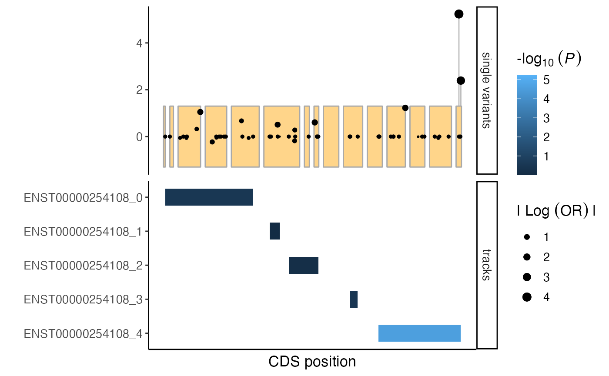
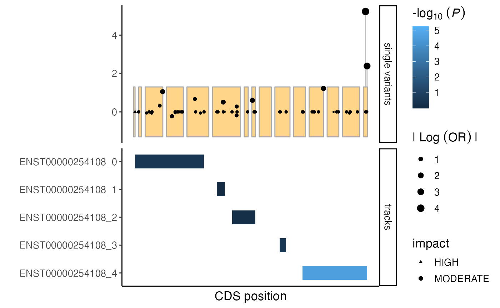
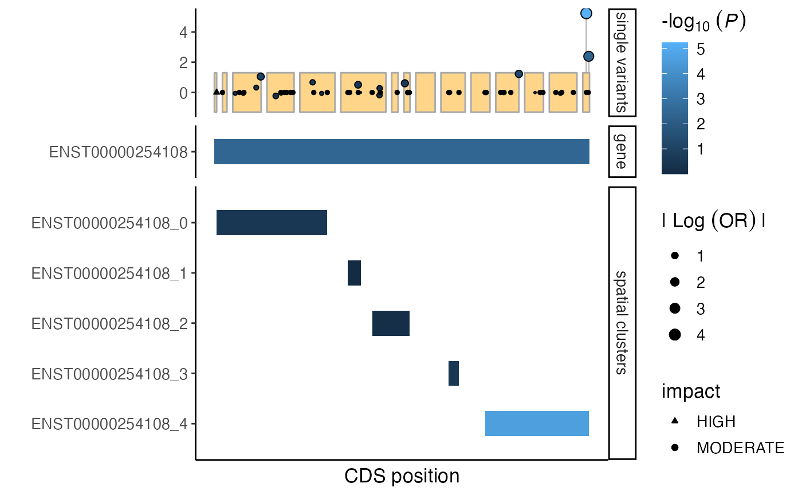

spatial_clustering.RmdThis tutorial shows how regional analyses can be performed in RVAT
using spatialClust() that is based on an unsupervised
approach based on the spatial clustering method by(Loehlein Fier et al. 2017). It partitions
variants within genes into consecutive non-overlapping windows. In
brief, this algorithm applies a sliding window approach and models the
mutation intensity within windows using a non-homogeneous Poisson point
process. Within each window variants are then divided at points where
the distance is larger than expected under the exponential distribution,
thus defining spatially clustered groups of variants.
Initialize gdb and output directory use in this tutorial:
gdb <- create_example_gdb()
outdir <- tempdir()To perform spatial clustering of coding variants, we’ll first map
genomic coordinates to CDS coordinates using the mapToCDS
method.
# The mapToCds method relies on an ensembl gtf/gff file for remapping
gtf <- rtracklayer::import("https://ftp.ensembl.org/pub/release-105/gtf/homo_sapiens/Homo_sapiens.GRCh38.105.gtf.gz")
## subset relevant genes
genes <- unique(getAnno(gdb, "varInfo", fields = "gene_name")$gene_name)
gtf <- gtf[gtf$gene_biotype %in% "protein_coding" &
gtf$transcript_biotype %in% "protein_coding" &
gtf$gene_name %in% genes]
## transcript ids
transcripts <- unique(gtf$transcript_id)
# perform remapping
## note that the `exonPadding` parameter will cause remapping of variants that are 12 base pairs from the exon border to the border.
mapToCDS(
gdb,
gff = gtf,
transcript_id = transcripts,
exonPadding = 12,
output = paste0(outdir, "/cdsPOS.txt.gz"),
biotype = "protein_coding"
)
# upload to gdb
R.utils::gunzip( paste0(outdir, "/cdsPOS.txt.gz"), remove = FALSE, overwrite = TRUE)
uploadAnno(gdb, value = paste0(outdir, "/cdsPOS.txt"), name = "cdsPOS", skipRemap = TRUE)Here, we perform spatial clustering for each transcript as described
in (Loehlein Fier et al. 2017) and
implemented in the spatialClust() method. It is similar to
the buildVarSet() method, and will likewise generate a
varSetFile. The ‘windowSize’ parameter controls the window
size, and the ‘posField` parameter can be used to specify the position
field to use, in this case ’cdsPOS’ as generated above.
spatialClust(
gdb,
unitTable = "varInfo",
varSetName = "ModerateHigh",
unitName = "transcript_id",
where = "ModerateImpact = 1 or HighImpact = 1",
windowSize = 30,
overlap = 15,
intersection = "cdsPOS",
posField = "cdsPOS",
output = paste0(outdir, "/moderatehigh_clusters.txt.gz")
)Given that spatialClust() generates a
varSetFile(), we can as described in other tutorials like
the vignette("association_testing") tutorial.
# connect ot the varSetFile
varsetfile <- varSetFile(paste0(outdir, "/moderatehigh_clusters.txt.gz"))
# for this example we'll focus on the ALS gene FUS
units <- listUnits(varsetfile)[stringr::str_detect(listUnits(varsetfile), "ENST00000254108")]
# perform burden tests
burden_spatialclusters <- assocTest(gdb,
varSet = getVarSet(varsetfile, unit = units),
cohort="pheno",
pheno = "pheno",
covar = c("sex", "PC1", "PC2", "PC3", "PC4"),
test = "firth",
name = "spatial_clustering",
verbose = FALSE)
burden_spatialclusters## rvbResult with 5 rows and 24 columns
## unit cohort varSetName name pheno
## <character> <Rle> <Rle> <Rle> <Rle>
## 1 ENST00000254108_0 pheno ModerateHigh_30_15 spatial_clustering pheno
## 2 ENST00000254108_1 pheno ModerateHigh_30_15 spatial_clustering pheno
## 3 ENST00000254108_2 pheno ModerateHigh_30_15 spatial_clustering pheno
## 4 ENST00000254108_3 pheno ModerateHigh_30_15 spatial_clustering pheno
## 5 ENST00000254108_4 pheno ModerateHigh_30_15 spatial_clustering pheno
## covar geneticModel MAFweight test nvar caseCarriers
## <Rle> <Rle> <Rle> <Rle> <numeric> <numeric>
## 1 sex,PC1,PC2,PC3,PC4 allelic 1 firth 19 15
## 2 sex,PC1,PC2,PC3,PC4 allelic 1 firth 5 1
## 3 sex,PC1,PC2,PC3,PC4 allelic 1 firth 9 2
## 4 sex,PC1,PC2,PC3,PC4 allelic 1 firth 3 1
## 5 sex,PC1,PC2,PC3,PC4 allelic 1 firth 20 18
## ctrlCarriers meanCaseScore meanCtrlScore caseN ctrlN caseCallRate
## <numeric> <numeric> <numeric> <numeric> <numeric> <numeric>
## 1 44 0.003064461 0.002265313 5000 20000 0.958979
## 2 6 0.000205399 0.000305409 5000 20000 0.978760
## 3 13 0.000416272 0.000666871 5000 20000 0.978400
## 4 2 0.000213562 0.000113819 5000 20000 0.900733
## 5 18 0.003639603 0.000939982 5000 20000 0.971170
## ctrlCallRate effect effectSE effectCIlower effectCIupper OR
## <numeric> <numeric> <numeric> <numeric> <numeric> <numeric>
## 1 0.958750 0.312226 0.296377 -0.299949 0.870650 1.366463
## 2 0.979250 -0.100711 0.908186 -2.365322 1.464124 0.904195
## 3 0.978533 -0.284614 0.690642 -1.915206 0.912965 0.752304
## 4 0.898733 1.111187 1.033718 -1.281935 3.129786 3.037963
## 5 0.970683 1.444483 0.330752 0.790567 2.098382 4.239660
## P
## <numeric>
## 1 3.04661e-01
## 2 9.10852e-01
## 3 6.70675e-01
## 4 3.13982e-01
## 5 2.65621e-05RVAT’s mutationPlot() function provides a convenient way
to visualize variants across a gene in a lollipop-plot, while also
visualizing additional tracks such as protein domains or mutation
clusters as generated above.
First, we’ll need to prepare some additional data:
- Single variant statistics to plot along with the spatial
clusters.
- Extract cds ranges for spatial clusters (using the
getRanges() method). - Retrieve CDS coordinates of the
entire transcript.
# perform single variant association tests
sv <- assocTest(gdb,
varSet = getVarSet(varsetfile, unit = units),
cohort = "pheno",
pheno = "pheno",
covar = c("sex", "PC1", "PC2", "PC3", "PC4"),
test = "firth",
name = "sv",
singlevar = TRUE,
verbose = FALSE)
# extract CDS ranges for spatial clusters using the `getRanges` method
units <- listUnits(varsetfile)[stringr::str_detect(listUnits(varsetfile), "ENST00000254108")]
varsetlist <- getVarSet(varsetfile,
unit = units)
where <- sprintf("transcript_id = '%s'", stringr::str_split(listUnits(varsetlist), pattern = "_", simplify = TRUE)[,1])
spatialcluster_ranges <- getRanges(
varsetlist,
gdb,
table = "cdsPOS",
POS = "cdsPOS",
where = where
)
## add ranges to results
burden_spatialclusters <- merge(
burden_spatialclusters,
spatialcluster_ranges[,c("CHROM", "start", "end", "unit")],
by = "unit"
)
# get CDS positions for single variants
sv_cdsPOS <- getAnno(
gdb,
table = "cdsPOS",
where = "transcript_id = 'ENST00000254108'"
)
sv_cdsPOS$VAR_id <- as.character(sv_cdsPOS$VAR_id)
sv <- merge(sv, sv_cdsPOS[,c("VAR_id", "cdsPOS")] %>% dplyr::rename(POS = cdsPOS), by = "VAR_id")
# get CDS coordinates using ensembldb
library(ensembldb)
gtf <- gtf[!is.na(gtf$transcript_id) & gtf$transcript_id == "ENST00000254108"]
ensdb_path <- tempfile()
ensdb <- ensembldb::ensDbFromGRanges(
gtf,
outfile = ensdb_path,
organism = "Homo_sapiens",
genomeVersion = "GRCh38",
version = "105"
)
ensdb <- EnsDb(ensdb_path)
cds <- unlist(genomeToTranscript(sort(gtf[gtf$type == "CDS",]), db = ensdb))
cds <- sort(transcriptToCds(cds, db = ensdb))Generate a mutation plot, including the spatial cluster burden results as a custom track:
plt <- mutationPlot(
singleVar = sv,
cds = cds,
customTracks = burden_spatialclusters
)
plt
The shapes of the points can be set to indicate the impact of the variant. Below we by visualize moderate impact variants as points and high impact variants by triangles.
# add variant effect predictors to single variant results
varinfo <- getAnno(gdb, "varInfo", VAR_id = sv$VAR_id)
varinfo$VAR_id <- as.character(varinfo$VAR_id)
varinfo <- varinfo %>%
dplyr::mutate(
impact = dplyr::case_when(
HighImpact == 1 ~ "HIGH",
ModerateImpact == 1 ~ "MODERATE",
TRUE ~ NA_character_
)
)
sv <- merge(sv, varinfo[,c("VAR_id", "impact")], by = "VAR_id")
# generate mutation plot
plt <- mutationPlot(
cds = cds,
customTracks = burden_spatialclusters,
singleVar = sv,
impactScale = c("HIGH" = 17, "MODERATE" = 19)
)
plt
Multiple sets of tracks can be included. In below example we add a
whole-gene track. By setting splitByTrackType = TRUE, the
spatial cluster and whole gene tracks will be plotted separately. The
order of the track types can be set using the trackOrder
parameter.
# generate whole-gene test-statistics
burden_wholegene <- assocTest(gdb,
VAR_id = sv$VAR_id,
cohort = "pheno",
pheno = "pheno",
covar = c("sex", "PC1", "PC2", "PC3", "PC4"),
test = "firth",
name = "whole gene",
verbose = FALSE)
burden_wholegene$unit <- "ENST00000254108"
burden_wholegene$CHROM <- unique(burden_spatialclusters$CHROM)
burden_wholegene$start <- min(start(cds))
burden_wholegene$end <- max(end(cds))
burden_wholegene$trackType = "gene"
burden_spatialclusters$trackType = "spatial clusters"
# updated custom tracks
tracks <- rbind(burden_wholegene, burden_spatialclusters)
# generate mutation plot
plt <- mutationPlot(
cds = cds,
customTracks = tracks,
singleVar = sv,
splitByTrackType = TRUE,
trackOrder = c("gene", "spatial clusters"),
impactScale = c("HIGH" = 24, "MODERATE" = 21)
)
plt
Generate an interactive mutation plot by setting
interactive = TRUE. Field to be shown when hovering over
elements can be set using the trackHoverFields and
svHoverFields parameters.
# round fields that will be shown upon hovering
sv$OR <- signif(sv$OR, 3)
sv$P <- signif(sv$P, 3)
tracks$OR <- signif(tracks$OR, 3)
tracks$P <- signif(tracks$P, 3)
# generate interactive mutation plot
plt <- mutationPlot(
cds = cds,
customTracks = tracks,
singleVar = sv,
splitByTrackType = TRUE,
trackOrder = c("gene", "spatial clusters"),
impactScale = c("HIGH" = 24, "MODERATE" = 21),
interactive = TRUE,
trackHoverFields = c("unit", "OR", "P"),
svHoverFields = c("OR", "P")
)
plotly::layout(plt, margin = list(l=175))